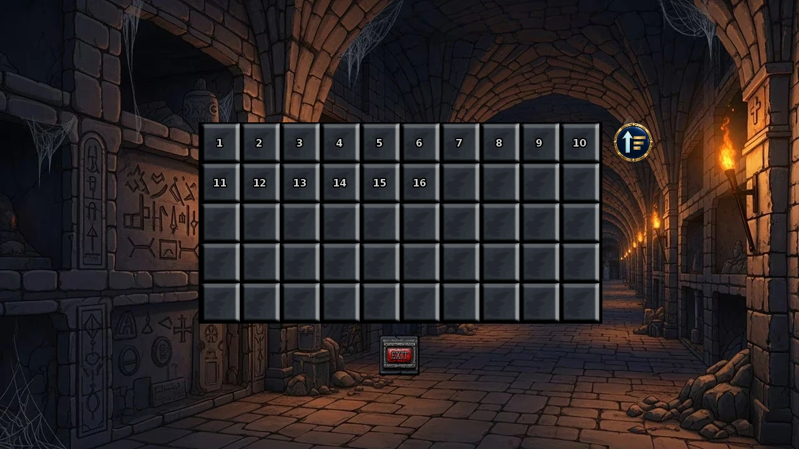

Select a screenshot to enlarge it. Screens show example inventories and progress.
Find Morrie through dungeon exploration
Morrie has fifteen dungeon encounters: an introduction and fourteen independent follow-ups. Look for the introduction on normal dungeon floors 16–50. She does not have a town home, daily conversation schedule, normal gift menu or ordinary relationship-stage ladder. These encounters are a story and gallery collection route, rather than a repeatable source of workers, companions or currency.
Enter through Medieval → Village Outskirts → Monastery Scriptoria → Monastery Scriptoria (Lobby) → Underground Catacombs → Explore Ancient Catacombs. Reach and unlock suitable floors through ordinary dungeon exploration. Normal dungeon access and content-access requirements still apply; Morrie does not grant access to an otherwise locked floor.
A practical first route
- Find the introduction on a safe accessible floor from 16 to 50. Merely entering a qualifying floor does not force an encounter.
- After finishing the introduction, work on any available follow-up. Gallery numbering is a catalog order, not a required quest sequence.
- Keep Awesome Crown, Gladiator Belt and 1 Ring in Key Items when pursuing their matching follow-ups. The encounter checks ownership and does not consume them.
- Plan a separate return to floor 13 for its two water-floor follow-ups. Other deep floors cannot replace this stop.
Dungeon movement and combat retain their normal time and resource costs. Morrie’s dialogue has no separate listed entry fee. Finish a scene before leaving so its completion is recorded.

All fifteen encounter requirements
Floor endpoints are inclusive. Every follow-up requires the introduction completed and that particular encounter still unfinished.
Show gallery titles and floor requirements
| Gallery # | Encounter | Normal floors | Extra requirement |
|---|---|---|---|
| 1 | Your Time Has Come | 16–50 | No extra prerequisite; this is the introduction |
| 2 | The Skeleton King's Crown | 2–12 or 14–30 | Awesome Crown in Key Items |
| 3 | The Octopus Bath | 13 only | At least 3 Sashimi water encounters completed |
| 4 | The Vampire's Celebration | 21–25 | 1 Ring in Key Items |
| 5 | The Two-Headed Bodyguard | 34–35 | At least 3 Bobo encounters completed |
| 6 | Unexpected Company | Any normal floor 1–50 except 13 | No extra item or character requirement |
| 7 | The Champion's Winnings | 1–12 or 14–30 | Gladiator Belt in Key Items |
| 8 | The Living Vines | 31–35 | No extra prerequisite |
| 9 | The Coffin Ferry | 13 only | No extra prerequisite |
| 10 | The Broken Mech | 41–45 | No extra prerequisite |
| 11 | The Void Drift | 36–40 | No extra prerequisite |
| 12 | The Infernal Forge | 26–30 | No extra prerequisite |
| 13 | The Mimic Bounty | 2–12 or 14–25 | No extra prerequisite |
| 14 | The Mushroom Wisps | 31–35 | No extra prerequisite |
| 15 | The Crystal Cold | 14–20 | No extra prerequisite |
Unexpected Company has the broadest floor coverage after the introduction. The introduction and company encounter also have presentations for the volcanic floors; they share completion with their ordinary versions.
Obtain the three prerequisite items
| Key Item | Where to obtain it | Morrie follow-up |
|---|---|---|
| Awesome Crown | The separate Skeleton King dungeon scenario. Keep its actual Key Item reward. | Floors 2–12 or 14–30 |
| Gladiator Belt | The champion reward from Fight Club Arena. Visiting the arena or having high combat stats does not replace owning the belt. | Floors 1–12 or 14–30 |
| 1 Ring | The separate Vampire Ring scenario; it is a Key Item, not ordinary Jewelry. | Floors 21–25 |
Morrie’s item-gated encounters do not award these prerequisite items themselves. If the matching scene never appears, check Key Items first, then the floor and introduction completion.
The Sashimi and Bobo prerequisites
Complete three Sashimi water encounters on floor 13 before searching for Morrie’s octopus follow-up there. The separate coffin-ferry encounter on that floor only needs Morrie’s introduction, so it can appear before the Sashimi requirement is ready.
For the bodyguard follow-up, complete three Bobo encounters first. Build the business dungeon’s Cell Corridor before looking for Bobo’s opening encounter. A practical progression is to visit floors 32,33 and 34 for her successive encounters, then search floors 34–35 for Morrie’s follow-up. These are separate character encounters; seeing Bobo once does not complete all three.
Group unfinished encounters by floor
| Floors | Useful targets after the introduction |
|---|---|
| 14–20 | Crystal Cold; Crown/Belt checks; Mimic Bounty through 20; broad company encounter. |
| 21–25 | Ring celebration; Crown/Belt checks; Mimic Bounty; company. |
| 26–30 | Infernal Forge; Crown/Belt checks; company. |
| 13 | Coffin Ferry; Octopus Bath after Sashimi’s three encounters. |
| 31–35 | Living Vines and Mushroom Wisps; bodyguard follow-up specifically 34–35 after Bobo. |
| 36–40 | Void Drift and the broad company encounter. |
| 41–45 | Broken Mech and company. |
| 46–50 | Can provide the introduction or company encounter; cannot replace all lower-floor requirements. |
Use a safe floor that covers several unfinished requirements. Pushing to the deepest available floor is not always the fastest collection route.
Completion, rewards and troubleshooting
Each encounter completes once in the current timeline. Leaving and re-entering the dungeon does not reset it. Dialogue choices converge on the encounter’s completion; there is no separate hidden affection score to grind with Morrie. Completing these encounters advances the collection; it does not provide recurring stat, currency or recruitment rewards.
Eligible scenes enter the dungeon’s encounter selection. Other scenes, combat, priority events and recent-encounter filtering can affect what happens next. There is no reliable universal “Morrie chance per step,” and the introduction is not guaranteed immediately upon reaching floor 16. If nothing appears, check the floor, unfinished scene, introduction and any item/character prerequisite before spending more resources searching.
Unlocked encounters have entries in EXTRAS. A replay is for viewing; it does not replace the live timeline’s prerequisites or provide another gameplay reward. New Game+ restarts story progress, while retained prerequisite Key Items follow the normal carryover rules.
Related guides: Dungeon and Dragon Coin farming, Items and Blacksmith and Forge.
在地下城探索中寻找Morrie
Morrie共有十五段地下城邂逅：一次初遇，以及十四段彼此独立的后续。初遇可在普通地下城第16–50层出现。她没有城镇住所、每日交谈时段、普通赠礼菜单或常规关系阶段。这是一条剧情与画廊收集路线，不是反复取得员工、同伴或货币的途径。
从中世纪 → 村庄郊外 → 修道院抄写室 → 修道院抄写室（大厅）→ 地下墓穴 → 探索古代地下墓穴进入，按正常探索进度解锁合适楼层。地下城与相关内容的访问条件仍然有效，遇见Morrie不会替你开放尚不能进入的楼层。
实用起步路线
- 先在已能安全探索的第16–50层寻找初遇。抵达符合条件的楼层，并不保证立刻遇见她。
- 读完初遇后，可以推进任何已满足条件的后续。画廊编号只是目录顺序，不要求按编号逐段完成。
- 寻找对应后续时，请保留关键物品中的超凡王冠、角斗士腰带与一枚戒指。邂逅只检查持有，不会消耗它们。
- 另外安排一次返回第13层，完成两段水下楼层后续；其他深层不能代替这一站。
地下城移动与战斗仍按原有规则消耗时间和资源；Morrie的对话没有另列入场费。离开前请读完场景，让完成进度正常记录。

十五段邂逅的条件
楼层范围包含两端。除初遇外，每一段都需要先完成初遇，且该段尚未完成。
展开画廊名称与楼层条件
| 画廊编号 | 邂逅 | 普通地下城楼层 | 额外条件 |
|---|---|---|---|
| 1 | 你的死期到了 | 16–50 | 无需额外前置，先完成这段初遇。 |
| 2 | 骷髅王的王冠 | 2–12 or 14–30 | 关键物品中持有超凡王冠。 |
| 3 | 章鱼浴 | 13 only | 已完成Sashimi的三次水下邂逅。 |
| 4 | 吸血鬼的庆典 | 21–25 | 关键物品中持有一枚戒指。 |
| 5 | 双头保镖 | 34–35 | 已完成Bobo的三次邂逅。 |
| 6 | 意外的陪伴 | Any normal floor 1–50 except 13 | 无需额外物品或人物前置。 |
| 7 | 冠军的奖金 | 1–12 or 14–30 | 关键物品中持有角斗士腰带。 |
| 8 | 活藤 | 31–35 | 无需额外前置。 |
| 9 | 棺材渡船 | 13 only | 无需额外前置。 |
| 10 | 坏掉的机甲 | 41–45 | 无需额外前置。 |
| 11 | 虚空漂流 | 36–40 | 无需额外前置。 |
| 12 | 地狱熔炉 | 26–30 | 无需额外前置。 |
| 13 | 宝箱怪悬赏 | 2–12 or 14–25 | 无需额外前置。 |
| 14 | 蘑菇林的幽魂 | 31–35 | 无需额外前置。 |
| 15 | 水晶寒意 | 14–20 | 无需额外前置。 |
初遇后，「意外的陪伴」覆盖的楼层最广。初遇与这段同行场景在火山楼层也有对应呈现，但与普通版本共用完成记录。
取得三件前置物品
| 关键物品 | 取得方式 | Morrie后续楼层 |
|---|---|---|
| 超凡王冠 | 完成独立的骷髅王地下城遭遇，保留其关键物品奖励。 | 2–12或14–30层 |
| 角斗士腰带 | 取得Fight Club Arena的冠军奖励；只到过竞技场或战斗属性很高，不能代替实际持有腰带。 | 1–12或14–30层 |
| 一枚戒指 | 来自独立的吸血鬼戒指遭遇，属于关键物品，不是普通珠宝。 | 21–25层 |
Morrie的物品后续不会替你发放这些前置道具。某段迟迟不出现时，先检查关键物品，再检查所在楼层与初遇是否完成。
Sashimi与Bobo的前置进度
先在第13层完成Sashimi的三次水下邂逅，再在该层寻找Morrie的章鱼后续。同层的渡船场景只需要完成Morrie初遇，因此可以先于Sashimi前置完成。
保镖后续需要先完成Bobo的三次邂逅。寻找Bobo初遇前，要先建好营业场所地牢中的牢房走廊。可以依次安排第32、33、34层来推进她的三段遭遇，再到第34–35层寻找Morrie。两条路线分开记录，遇过一次Bobo不等于三段全部完成。
按楼层合并规划
| 楼层 | 初遇后的实用目标 |
|---|---|
| 14–20 | 寒冷水晶场景、王冠／腰带后续、拟态怪悬赏，以及覆盖较广的同行场景。 |
| 21–25 | 戒指庆祝、王冠／腰带后续、拟态怪悬赏与同行。 |
| 26–30 | 炼狱锻炉、王冠／腰带后续与同行。 |
| 13 | 渡船；完成Sashimi三次邂逅后，还可寻找章鱼场景。 |
| 31–35 | 藤蔓与蘑菇场景；保镖后续另外限定34–35层，并需要Bobo前置。 |
| 36–40 | 虚空漂流与同行。 |
| 41–45 | 损坏机甲与同行。 |
| 46–50 | 可以提供初遇或同行，但不能代替较低楼层的全部条件。 |
优先选择能安全探索、又覆盖多项未完成条件的楼层。一路只往最深处走，并不总是最快的收集办法。
完成记录、奖励与排查
每段在当前时间线完成一次，离开并重新进入地下城不会清除记录。对话选项最终都会走向该段完成，没有另一条需要反复刷的Morrie隐藏好感。本路线的场景主要记录完成，不会持续发放属性、货币或招募奖励。
符合条件的场景会进入地下城的遭遇选择。其他剧情、战斗、优先事件与近期遭遇筛选，都会影响下一次出现什么，不能用一个固定的「每步Morrie概率」概括。到达第16层也不会立即保证初遇。长时间没出现时，先检查楼层、该段是否已经完成、初遇状态，以及物品或人物前置。
已解锁场景可在EXTRAS查看。重看用于欣赏内容，不会代替当前时间线的前置，也不会另发一次游戏奖励。新游戏+会重新开始剧情，已保留的前置关键物品则按周目保留规则处理。
Adapted and updated from the community Chronoromancer Wiki. Community source and history · CC BY-SA 4.0. Game images © Chronoromancer Studio.